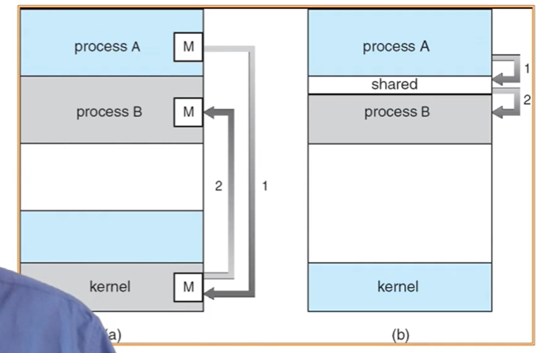

创建时间：
2020/04/27 15:36
作者：
lzr
IPC进程间通信
inter process communication
概述
为什么要进程间通信
虽然要保护进程的地址空间不会被其他不相关的进程访问
但是进程之间可能协作在一起完成更大的任务
沟通就需要通信
通信操作
IPC facility提供两个操作
send(message) -消息大小固定或者可变
receive(message)
如果进程P和Q想要通信，那么需要
在他们之间建立数据链路
通过send/receive交换消息
通信链路的实现
物理（如 共享内存，硬件总线）
逻辑（如 逻辑属性）
（左侧为间接通讯，右侧为直接通信，类似打电话和直接面对面交流的区别）
从直接和间接来分类
直接通信
进程必须正确命名对方：
send(P,message) -发送信息到P
receive(Q,message) -从Q接收信息
通信链路的属性
自动建立链路
一条链路恰好对应一对通信进程
每对进程之间只有一个链接存在
链接可以是单向的，但通常为双向的
间接通信
定向从消息队列接收消息
每个消息队列都有一个唯一的ID
只有它们共享了一个消息队列，进程才能够通信
通信链路的属性
只有进程共享一个共同的消息队列，才能建立链路
链接可以与许多进程相关联
每对进程可以共享多个数据链路
连接可以是单向或双向
操作
创建一个新的消息队列
通过消息队列发送和接收信息
销毁消息队列
原语的定义如下：
send(A,message) -发送信息到队列A
receive(A,message) -从队列A接收信息
从阻塞和非阻塞来分类
消息传递可以是阻塞或非阻塞
阻塞被认为是同步的
Blocking send
has the sendert block until the message is received
Blocking receive
has the receiver block until a message is available
非阻塞被认为是异步的
Non-blocking
send has the sender send the message and continue;
Non-blocking
receive has the receiver receive a valid message or null;
它们有各自适合的场景，没有优劣之分。